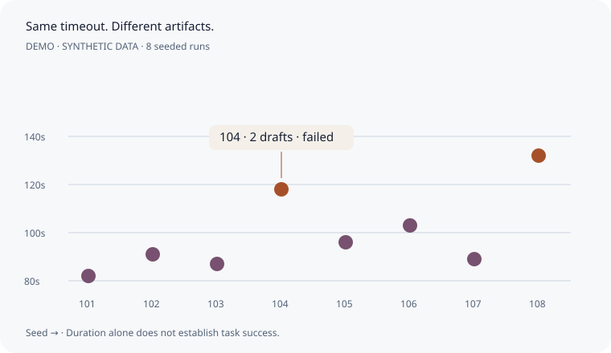
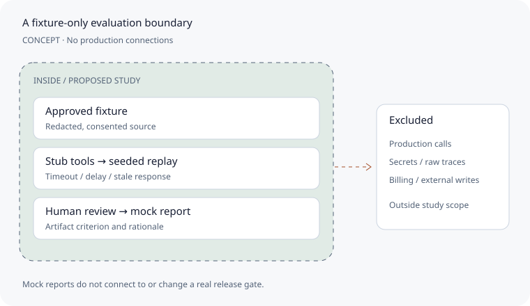

E1
Pearl horizon
Narrative opening
FlakeMap / Design system
A visible specification for the details that make the website feel considered: layout, readable evidence, purposeful surfaces and complete interaction states.
01 / Layout foundation
Marketing uses a 1280px content maximum. Reading stays within 680px. The workbench may extend to 1600px.
≥1200px · 24px gutters · centered content · at 1440px, the 1280px container has 80px outer margins.
| Viewport | Columns | Gutter | Minimum margin | Section padding |
|---|---|---|---|---|
| Desktop ≥1200 | 12 | 24px | 64px | 96px |
| Tablet 768–1199 | 8 | 20px | 32px | 64px |
| Mobile ≤767 | 4 | 16px | 20px | 48px |
02 / Spatial rhythm
Use the named scale rather than arbitrary gaps. Align copy, metadata and actions inside a shared card grid.
004pxOptical adjustment008pxIcon + label012pxCompact grouping016pxRelated elements024pxGrid / form group032pxCard interior048pxCopy → visual064pxTablet chapter096pxDesktop chapter128pxCinematic pauseCompare artifacts across a seeded set of runs and explicitly changed tool conditions.
24px copy → actionHeading → description 16px
Description → visual 48px / 32px mobile
Form label → field 8px
Input → help 6px
Section heading → content 32px
03 / Typographic hierarchy
Instrument Serif carries narrative. Manrope carries actions, prose and evidence. Italic is an editorial accent; tabular numerals align run data.
display-xlInstrument Serif 400 · 104/56px · line 1.02 · tracking -0.035emFollow the path.
display-lgInstrument Serif 400 · 72/44px · line 1.06 · tracking -0.03emFollow the path.
display-mdInstrument Serif 400 · 48/36px · line 1.1 · tracking -0.025emFollow the path.
heading-lgManrope 800 · 32/26px · line 1.2 · tracking -0.03emInspect the evidence
heading-mdManrope 700 · 24/22px · line 1.3 · tracking -0.02emInspect the evidence
heading-smManrope 700 · 18/18px · line 1.35 · tracking -0.015emInspect the evidence
body-lgManrope 400 · 18/17px · line 1.65 · tracking 0Inspect the evidence
body-mdManrope 400 · 16/16px · line 1.65 · tracking 0Inspect the evidence
body-smManrope 500 · 14/14px · line 1.55 · tracking 0Inspect the evidence
labelManrope 600 · 13/13px · line 1.4 · tracking 0Inspect the evidence
captionManrope 500 · 12/12px · line 1.5 · tracking 0Inspect the evidence
eyebrowManrope 700 · 11/11px · line 1.4 · tracking 0.12emInspect the evidence
Sample numbers only. Both font licenses are included. Body reading width ≤65ch; labels ≤30ch; tables left-align text and right-align quantities.
04 / Elevation
Depth shows hierarchy. Charts and tables stay flat; raised cards invite inspection; overlays sit above the workbench.
none0 2px 6px rgba(23,30,51,.05)0 8px 24px rgba(23,30,51,.08)0 12px 32px rgba(23,30,51,.12)0 24px 64px rgba(23,30,51,.18)Z-order: canvas 0 · content 1 · sticky navigation 20 · menu 30 · modal 50 · toast 60. Dark panels use borders and tonal separation before shadows.
05 / Purposeful components
Different content gets a different composition. Hover or keyboard focus lifts interactive cards by 2px and reveals an inspect affordance.
Radius: control 10px · panel 16px · feature 24px. Imagery uses original material assets, 16:10 crops and stable caption surfaces. No customer photography or invented endorsements.
06 / Interaction details
Hover each active button, then Tab through it. Essential content remains visible on touch and with animation disabled.
Buttons 48px high, 20px horizontal padding, 8px icon gap. Compact 40px; icon target 44px. Fields 48px. Hover never changes layout; selected controls use aria-pressed.
07 / Product workbench
Change the tool condition, select a seeded record and inspect the resulting artifacts. The review decision updates a mock gate report.
| Seed | Baseline | Candidate | Inspect |
|---|
Fixed synthetic fixture outcomes. Eight runs illustrate a distribution; they do not establish statistical confidence or real reliability.
Human review pending · Mock gate held
Seed: stable fixture identifier. Criterion: exactly one draft. Pass: sample criterion met. Duplicate: two draft artifacts. Review: local annotation only. Gate: mock decision, no real CI action.
08 / Product mechanism
Ports attach to box edges. Connectors avoid labels. Copper marks the fault; the outcome uses a labeled status.
Baseline uses shared deduplication and suppresses the late artifact. Candidate lacks that protection. Download editable SVG ↗
09 / Journeys
A QA engineer reaches artifact evidence and a reviewable mock report. An engineering lead reaches agreed trial criteria through a separate buyer journey.
Home → concrete failure story. Explain the category, existing-stack fit and research-stage boundary.
Qualification asks about approved traces, release frequency and owner. No raw traces on a public form. Consent and validated intake infrastructure are required before real collection.
10 / Chapter environments
Shown together so their range is visible. Related materials, distinct reading conditions and a specific narrative responsibility.
Narrative opening
Explain divergence
Approved source → scenario
Seeded run distribution
Isolate a failing transition
Criterion → release decision
Evidence + human review
Study scope + consent
Glass scenes are original bitmap assets; structured grids, threshold rules and archive/sage treatments are editable CSS. Place product evidence on opaque reading panels. No geographic map is used without geographic data; FlakeMap maps workflow transitions.
11 / Iconography
24 original SVGs. 24px viewBox, 1.5px stroke, round joins. Select an icon to download its editable file.
16px metadata · 20px controls · 24px navigation · 32px features. Keep 8px next to labels. LinkedIn and Crunchbase icon specimens are now included in the footer below; profile destinations remain unconfigured.
12 / Depth with purpose
Hover to preview; click to keep the back open. Tab to a card and use Enter or Space. On touch, tap to flip. Reduced motion switches faces without rotation.
580ms perspective flip · 1200px perspective · preserved 16px radius. The preview responds to hover-capable pointers only; click pins it. Required evidence is also available in the dashboard and visual library below.
13 / Evidence visual library
Three editable visuals answer different questions. On narrow screens, swipe inside the chart or read its text equivalent below. Every chart includes its denominator and synthetic boundary. Maps describe workflow and provenance, rather than unrelated geography.
| Condition | Baseline met | Candidate met |
|---|---|---|
| Normal | 8/8 | 8/8 |
| Timeout | 8/8 | 6/8 |
| Delay | 8/8 | 7/8 |
15 / Complete form flows
Responsive, standalone previews with labels, validation, review, reset, and honest completion states. No credentials collected or requests delivered.
A quiet trace-side layout and secure-link access flow. Local email validation leads into the synthetic workspace.
Open sign in →Qualify a workflow, current stack, release cadence, and trace approval. Review details before completing the local preview.
Open study form →Privacy & preview scope ↗ · No network submission, persistent form storage, or analytics.
16 / Workflow evidence patterns
Original FlakeMap visuals inspired by the clarity of your references: a filterable record queue with evidence, an annotated duration plot, a fixture-only study map, and a criterion comparison table.

